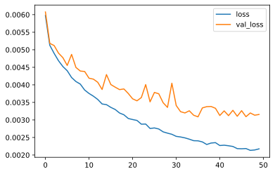
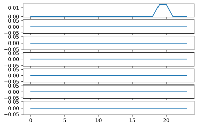
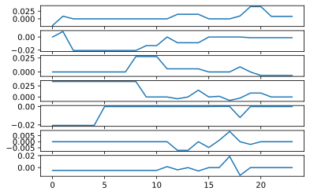

Quick Start¶
[1]:
# Filter out all RuntimeWarning
import warnings
warnings.filterwarnings("ignore", category=RuntimeWarning)
import logging
logging.getLogger("stumpy").setLevel(logging.ERROR)
[2]:
import pandas as pd
import numpy as np
dataset_link = 'https://archive.ics.uci.edu/ml/machine-learning-databases/00381/PRSA_data_2010.1.1-2014.12.31.csv'
df = pd.read_csv(dataset_link)
df = df.dropna().reset_index()
df = df.drop(['index', 'No', 'day', 'month', 'year', 'hour'], axis=1)
df['cbwd'] = df['cbwd'].astype('category').cat.codes
normalize = True
standardize = False
def _normalize(x):
return (x - x.min()) / (x.max() - x.min())
def _standardize(x):
return (x - x.mean()) / x.std()
if normalize:
df = df.apply(_normalize, axis=0)
elif standardize:
df = df.apply(_standardize, axis=0)
[3]:
print(df.head(10))
print(len(df.index), len(df.columns))
pm2.5 DEWP TEMP PRES cbwd Iws Is Ir
0 0.129779 0.352941 0.245902 0.527273 0.666667 0.002372 0.000000 0.0
1 0.148893 0.367647 0.245902 0.527273 0.666667 0.003947 0.000000 0.0
2 0.159960 0.426471 0.229508 0.545455 0.666667 0.005522 0.000000 0.0
3 0.182093 0.485294 0.229508 0.563636 0.666667 0.008690 0.037037 0.0
4 0.138833 0.485294 0.229508 0.563636 0.666667 0.010265 0.074074 0.0
5 0.109658 0.485294 0.213115 0.563636 0.666667 0.011840 0.111111 0.0
6 0.105634 0.485294 0.213115 0.581818 0.666667 0.015008 0.148148 0.0
7 0.124748 0.485294 0.229508 0.600000 0.666667 0.018176 0.000000 0.0
8 0.120724 0.470588 0.213115 0.600000 0.666667 0.021344 0.000000 0.0
9 0.132797 0.485294 0.229508 0.618182 0.666667 0.024512 0.000000 0.0
41757 8
[4]:
def create_sequences(X, y, n_steps=24):
for i in range(len(X) - (n_steps + 2)):
start = i
end = i + n_steps
yield X[start: end].values, y[end + 1]
[5]:
sequences = create_sequences(X=df.drop(['pm2.5'], axis=1), y=df['pm2.5'])
X, y = zip(*list(sequences))
[6]:
X = np.asarray(X)
y = np.asarray(y)
print(X.shape)
print(y.shape)
(41731, 24, 7)
(41731,)
[7]:
from sklearn.model_selection import train_test_split
X_train, X_test, y_train, y_test = train_test_split(
X, y, test_size=0.2,random_state=13
)
[8]:
# Build simple model
from tensorflow.keras import datasets, layers, models
cnn_model = models.Sequential()
cnn_model.add(layers.Conv1D(32, 3, activation='relu', input_shape=(24, 7)))
cnn_model.add(layers.MaxPooling1D(2))
cnn_model.add(layers.Conv1D(64, 3, activation='relu'))
cnn_model.add(layers.MaxPooling1D(2))
cnn_model.add(layers.Flatten())
cnn_model.add(layers.Dense(100, activation='relu'))
cnn_model.add(layers.Dropout(0.3))
cnn_model.add(layers.Dense(50, activation='relu'))
cnn_model.add(layers.Dropout(0.3))
cnn_model.add(layers.Dense(1))
[9]:
cnn_model.compile(optimizer='adam',
loss='mean_squared_error',
metrics=['mean_squared_error']
)
history = cnn_model.fit(X_train,
y_train,
epochs=50,
validation_data=(X_test, y_test),
verbose=0
)
[10]:
import matplotlib.pyplot as plt
loss = history.history.get("loss")
val_loss = history.history.get("val_loss")
plt.plot(loss, label="loss")
plt.plot(val_loss, label="val_loss")
plt.legend()
[10]:
<matplotlib.legend.Legend at 0x7fd7c88cac50>

[12]:
from functools import partial
# Create predict_fn for keras
def predict_fn(x, keras_model):
if len(x.shape) == 2:
prediction = keras_model.predict(x[np.newaxis]).ravel()
else:
prediction = keras_model.predict(x).ravel()
return prediction
# Explain the prediction made by cnn_model
cnn_fn = partial(predict_fn, keras_model=cnn_model)
[33]:
# Prepare a sample
sample = X_test[0]
print(sample.shape)
print(cnn_fn(sample))
(24, 7)
[0.2390903]
[14]:
from tsmule.xai.lime import LimeTS
explainer = LimeTS()
xcoef = explainer.explain(sample, cnn_fn)
_, features = xcoef.shape
fig, axs = plt.subplots(features)
for i in range(features):
axs[i].plot(xcoef[:, i])

[15]:
# If the target is normalized, and too small, we set alpha smaller to infer.
from sklearn import linear_model
explainer._kernel = linear_model.Lasso(alpha=0.001)
xcoef = explainer.explain(sample, cnn_fn)
fig, axs = plt.subplots(features)
for i in range(features):
axs[i].plot(xcoef[:, i])

[16]:
from tsmule.xai.evaluation import PerturbationAnalysis
from sklearn import metrics
# get relevance/explanations
samples_X = X_test[:10]
samples_y = y_test[:10]
explainer._kernel = linear_model.Lasso(alpha=0.001)
relevance = [explainer.explain(s, cnn_fn) for s in samples_X]
[32]:
# Evaluation the explanation
pa = PerturbationAnalysis()
scores = pa.analysis_relevance(samples_X, samples_y, relevance,
predict_fn=cnn_fn,
eval_fn=metrics.mean_squared_error)
is_valid = (scores["original"] <= scores["random"] <= scores["percentile"])
print(("valid" if is_valid else "invalid") + " explanation")
scores
valid explanation
[32]:
{'original': 0.005846083112844046,
'percentile': 0.014457936563684918,
'random': 0.010133240862548626}
[ ]: